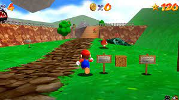

Super Mario 64, el primer juego de plataformas en 3D de la saga de Mario, estableció un nuevo arquetipo para el género (gracias a su forma de juego, totalmente libre, y el formato de sus gráficos 3D poligonales mezclados con sprites bidimensionales) tal como Super Mario Bros. lo hizo para los juegos de plataformas en dos dimensiones. El juego ha sido llamado «revolucionario» y no solo ha influenciado a muchos grandes juegos en su género, sino que también ha tenido un duradero impacto en los juegos 3D en general  Al cambiar de dos a tres dimensiones, Super Mario 64 reemplazó la tradicional pista de obstáculos de los juegos de plataformas por vastos mundos en los que el jugador debe completar múltiples y diversas misiones, con un énfasis en la exploración. Al hacer esto, logró preservar el «sentimiento» de los anteriores juegos de Mario al incluir muchos de sus elementos de juego y personajes. Es considerado por muchos críticos y fanes como uno de los mejores videojuegos de todos los tiempos.